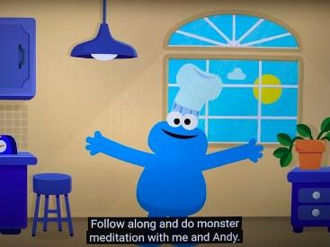
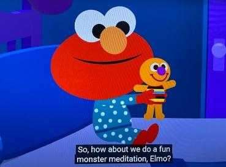

Sesame Street and Headspace: Monster Meditations
Sesame Street and Headspace have created these videos to encourage you to practice meditation and mindfulness.



Sesame Street Monster Meditation #1: “I Sense” with Cookie Monster and Headspace
Sesame Street Monster Meditation #2: “Goodnight Body” with Elmo and Headspace.
Sesame Street Monster Meditation #3: Focus Rhyme with Grover and Headspace.
Sesame Street Monster Meditation #4: Try, Try Again with Two-Headed Monster and Headspace